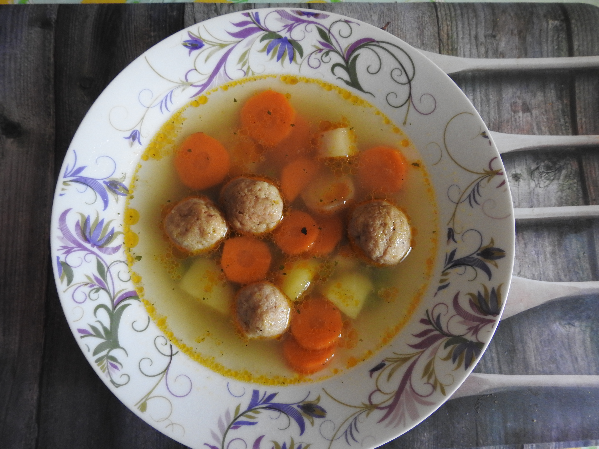
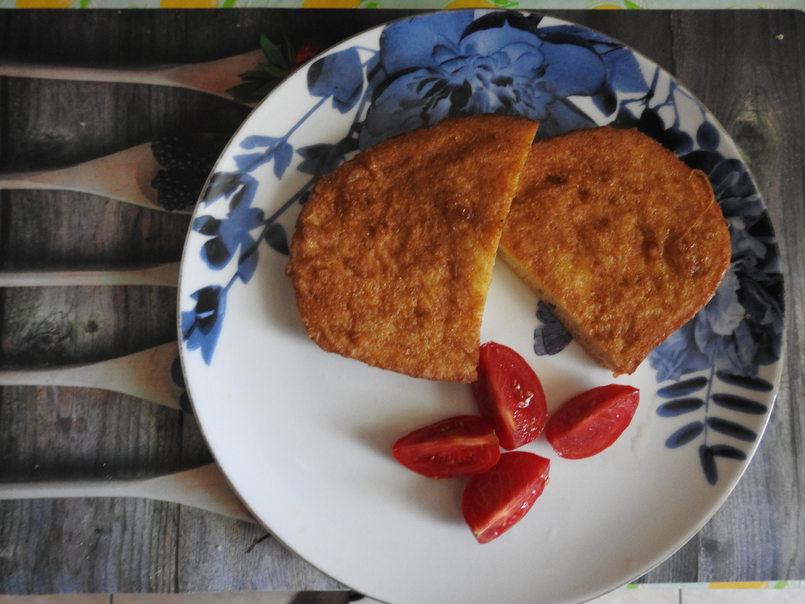

egyszerű receptek
Csak receptek semmi több

Amerikai szaftos tarja krumplival

Almás Sertésragu
Apple Pork Casserole

Bazsalikomos Rakott tészta

Bolognai Spagetti

Brassói Aprópecsenye Eredeti

Brassói Aprópecsenye Szaftos

Tojásos Ragu
Breakfast Casserole

Burgundi Marharagu

Carbonara spagetti

Cézár Salis csirke
Chicken Caesar salad

Sajtos Brokkolis tészta
Cheezy Broccoli Pasta

Csirkés Curry

Csirkés Korma

Gombás Csirke Ragu
Chicken mushroom casserole

Gombás Csirke Batyu
Chicken Mushroom cobbler

Csirkés Tikka Masala
Chicken Tikka Masala

Chimichanga

Cigány pecsenye

Cordon bleu

Pásztor Pite
Cottage Pie

Csilisbab

Csípős csirkeszárnyak
Csirkepörkölt

Csirkés Burrito

Csirkés rétes

Csirkés Rizottó gombával

Csirkés-tejszínes penne

Csülök pékné módra

Darálthússal töltött paprika

Derelye

Disznópörkölt

Édes-savanyú csirke

Édesburgonyás gnocchi

Egyben sült karaj

Enchilladas
Fajitas

Fasírt

Fish and Chips

Fokhagymás Parmezános tészta

Fokhagymás sertés csíkok csípősen zöldségekkel

Főtt sonka

Gnocchi Paradicsom szószban

Gombapörkölt

Gombás-Sajtos tepsis hús

Gombás-Tejfölös sertés szelet galuskával

Gombóta

Gong-Bao csirke (mogyorós)

Grízes tészta
.jpg)
Gyros

Gyros Pitában

Hagymakrémes cigánypecsenye

Hagymás marha rostélyos

Halas Curry
Fish Curry

Hoszin szószos kínai húsgolyók

Hot Pot

Hot-Dog

Húsos palacsinta

Illatos omlós csirkemell

KFC csirke

Kínai sült tészta csirkés

Kung Pao Csirke
Kung Pao Chicken

Lasagne

Citromos Fokhagymás Ragacsos Csirke
Lemon garlic sticky chicken

Lepcsánka

Sajtos Makaróni
Mac Cheese

Marha steak

Marhahúsos burrito

Marhapörkölt

Meggyszósz Sült hússal

Mexikói rizses darálthús egytálétel

Mézes-Mustáros csirke

Milánói makaróni

Mogyorós-csípős csirke

Gombás-Csirkés Pite
Mushroom chicken pie

Nachos

Nudli

Olaszos-tejszínes gombaszósz spagettivel

Pad Thai

Paprikás krumpli

Paradicsom szószos bazsalikomos tészta békönnel

Parasztreggeli

Pesztós csirke rolád

Piri-Piri sült csirke

Pizza

Pulled Pork
Tépett Malac

Quesadilla

Rakott krumpli

Rántott hús

Rántott parizer

Rántott sajt

Rizseshús

Sajtos-csirkés rakott karfiol

Kolbász hagymás mártással, pürével
Sausage in onion gravy with mash

Shepeard's Pie
Pásztor Pite

Shish Kebab

Slambuc

Sonkás-hagymás-tojásos rakott tészta

Tonhalas Spagetti paradicsom szószban
Spaghetti Tuna & Tomato Sauce
.jpg)
Stefánia szelet

Ragacsos Mézes Malac
Sticky Honey Pork

Sunday Roast

Sült csirke comb

Sült csirke egészbe

Sült kacsa dinsztelt káposztával

Sült oldalas

Szecsuáni Csirke

Szecsuáni Marha

Székelykáposzta

Szezámos kínai csirke

Szilvásgombóc

Szűzpecsenye lecsós burgonyával

Tarhonyás sertéspörkölt

Tatár beefsteak

Tejfölben pácolt csirkemell tepsis reszelt krumplival

Tepsis krumpli

Teriyaki csirke

Tésztasaláta

Tonhalas tészta

Töltött káposzta

Töltött sült-csirkecomb

Túrógombóc

Túrós csusza

Vega Lasagne

Vegetáriánus curry

Zöld borsó főzelék

Tészta paprikás csirke ízű szósszal

Babgulyás

Bableves

Brokkolikrémleves

Carrot & Coriander Soup
Répa és Koriander Leves

Édesburgonya krémleves

Fokhagymakrémleves

Gombakrémleves

Grízgombócleves

Gulyásleves

Halászlé

Húsgombóc leves

Húsleves

Jókai bableves

Karfiolleves

Kelbimbó leves

Kertészleves

Kínai leves

Köményleves

Krumplileves

Lebbencsleves
Májgombócleves

Minestoneleves

Paradicsomleves

Spárgakrémleves

Tarhonyaleves

Tárkonyosraguleves

Zellerkrémleves

Zöldborsóleves

Zöldségleves

Áfonyás grilled cheese szendvics

Alap Tojáskrém

Angol reggeli

Babkrémes-sonkás-sajtos gofri

Babos-kolbászos pirítós

Baconos röszti rántottával
Bundáskenyér

Bundáskenyér szendvics

Buggyantott tojás pirítóssal

Csirkés szendvics

Egg-Mayo Sandwich

Felvágottas Szendvics

Fokhagymás vajas pirítós

Főtt Virsli

Gombás melegszendvicskrém

Grilled-Cheese Sandwich

Gyors amerikai palacsinta

Hagymás rántotta

Hagymás-bab

Hal-konzerv

Japán Palacsinta

Konzerv melegszendvicskrém

Lekváros-kenyér

Lilahagymás tojáskrém

Melegszendvics

Muffuletta

Omlett

Parasztreggeli

Pesztós-Pulykás grillszendvics

Rántotta

Sajtos Omlett

Sonkás-sajtos bagett

Sonkás-Tojás
Spanish omlette sandwich style

Sült Szalonna
Sült Virsli

Szalonnás Tojásrántotta

Tejbe-gríz

Tejbe-rizs

Tepertőkrém

Tonhal-Saláta

Tuna & Quinoa Patties

Tonhal-Fasírt

Tonhal Szendvics

Tükörtojás

Vajas-mézes kenyér

Zsíros Pirítós Hagymával

Sajtos Tojásos Tortilla

3bit szelet

Amerikai Palacsinta

Bagolyszem

Beigli

Bukta

Rápatorta

Cheesecake

Brownie

Chocolate Fudge Cake

Citromos Tarte

Csokibomba

Csoki torta

Csokis vaniliás csigák

Csokoládés pattogós sütemény

Csőröge

Darálóskeksz

Egytojásos torta

Fánk

Fonott kalács

Goffri

Gyümölcs torta

Hókifli

Jugó kifli

Kakaós csiga

Karamellás shortbread

Kavart csokis túrós

Kevert diós

Kenyérlángos

Képviselőfánk

Kinder buenó szelet

Kókusz golyó

Kókusz kocka

Krémes

Krumplis pogácsa

Kürtös kalács

Lángos

Linzer

Madártej szelet

Mikrós süti

Muffin

Nap és éj

Napraforgó sütemény

Őzgerinc

Palacsinta

Paplan sütemény

Piskóta forró csokival

Piskóta tekercs

Pizzás-szalámis mnicsiga

Pogácsa

Pudingos szelet

Ropogós sajtosrúd

Sajtos kifli

Sajtos rolló

Sajtos rúd

Sajtos sós perec

Sajtos tallér

Somlói galuska

Sport szelet

Tiramisu

Túrós-Sajtos

vaniliás karika recept

Vendégváró süti

Zserbó

Raunch Szósz

Rick és Morty szecsuáni szósz